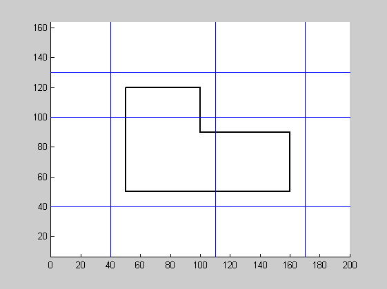
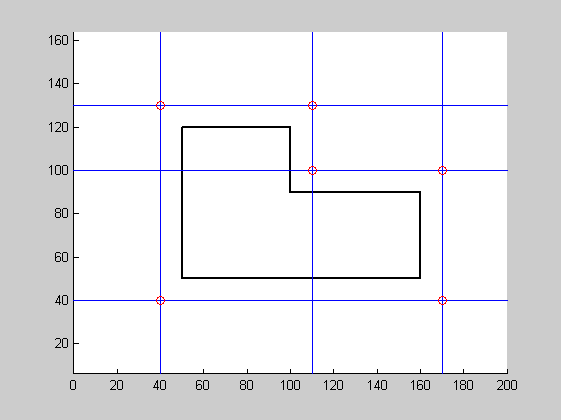
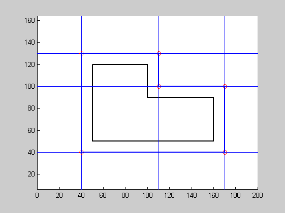

Contents
function varargout = makeDemo(varargin)
Initialisations
poly = [50 50;160 50;160 90;100 90;100 120;50 120;50 50];
dist = 10;
N = size(poly, 1)-1;
Calcul des droites
lines = zeros(N, 4);
for i=1:N
side = createLine(poly(i,:), poly(i+1,:));
lines(i, 1:4) = parallelLine(side, dist);
end
figure(1); clf; hold on;
axis ([0 200 0 150]); axis equal;
drawPolygon(poly, 'linewidth', 2, 'color', 'k')
drawLine(lines);

Intersections
lines = [lines;lines(1,:)];
poly2 = zeros(N, 2);
for i=1:N
poly2(i,1:2) = intersectLines(lines(i,:), lines(i+1,:));
end
drawPoint(poly2, 'ro');

Polygone final
drawPolygon(poly2, 'lineWidth', 2);
